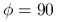
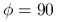
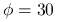
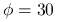

Use this option only together with mc_panorama_view.
mc_panorama distr_photons_over_pixel
With only mc_panorama_view all photons for the same pixel
are emitted into exactly the same direction. The finite solid angle that
is covered by one pixel is not accounted for. With
mc_panorama distr_photons_over_pixel the photons are distributed
over the FOV covered by the pixel.
mc_panorama no_pixel
Useful for calculation of radiance distributions which shall be exactly
charted. Originally mc_panorama_view was meant to calculate images
like produced by a CCD camera. You set the edges of your desired image
and the resolution of the sensor. MYSTIC will then calculate the
radiances at the center of each pixel. This implies that values for
the edges of the image as given by the input file are never
computed. The border angles for which radiances are computed are
shifted half a pixel to the inside of the domain. With
mc_panorama no_pixel the edging values as given in the input
file are directly hit. A short example: Assume you only have three
pixels. You choose your edges to be at  and
and  . With
mc_panorama no_pixel MYSTIC will calculate radiances at
. With
mc_panorama no_pixel MYSTIC will calculate radiances at
 ,  and
,  and  . Without this option you will get
values for , and
. Without this option you will get
values for , and  .
.
mc_panorama quicklook
This option allows to do a fast calculation in order to see whether you
have set your parameters right. All panorama pixels are run in a fast
mode: only one photon is started per pixel, it is moved till to a
fixed optical depth (0.1), and then a local estimate is performed. In
case the local estimate is done scattering (i.e. the photon has not
hit a surface before reaching tau=0.1), isotropic scattering is
assumed. Then the photon is killed. We suggest you turn off Rayleigh
scattering and aerosols while using this option. The result lets you
see roughly where your panorama is looking at surface, sunlit clouds,
shaded clouds, or slanted clouds.
mc_panorama with_direct_rad
Output is direct plus diffuse radiance.
Use together with mc_panorama distr_photons_over_pixel.